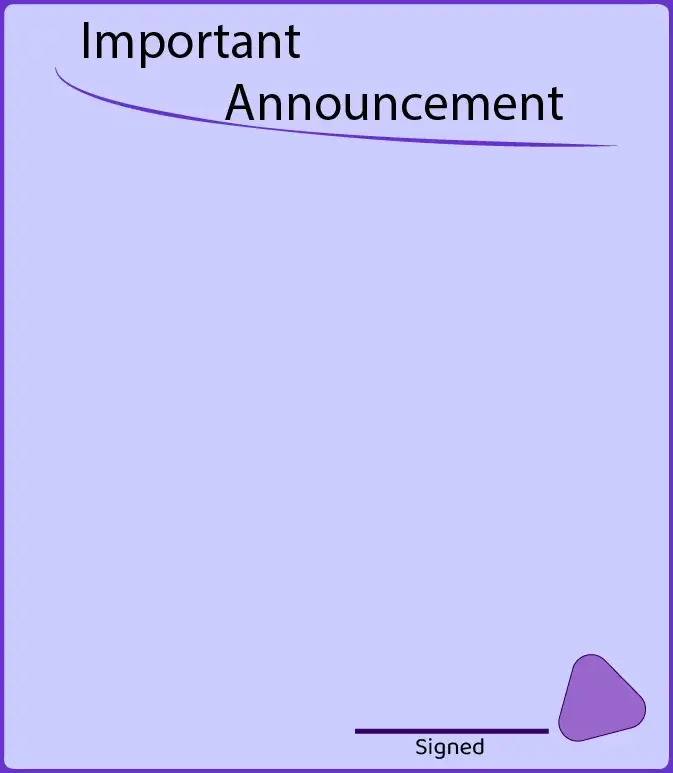

Graphic Design
From pamphlets to posters and flyers to social media posts, graphic design is an essential part of growing your brand. Do you need to make your message stand out? Do you want to grab the attention of your audience? My graphic design services will help you do exactly that.
Whether you're announcing an event or letting your audience know about a change in your plans, the message will be strengthened by this service.
Logos
A simple but recognizable logo can improve the staying power of a brand tremendously. I can create logos that convey the intent behind your brand while being simple to remember and easy to recognize.
Logos may be small, but they can have a big impact. A recognizable logo can become a beacon to your target audience, letting them know who you are before they consume any of your content.
Announcement Graphics
 Making announcements on social media stand out is vital and giving your announcement a brand-appropriate visual flair is sure to do exactly that. By adding an appropriate frame and background, I can bolster the tone of your announcement and catch the eyes of the readers.